워드프로세서-(구-1급) (2008-10-05 기출문제)
1과목: 워드프로세싱 일반
1. 다음 중 ROM(Read Only Memory)에 대한 설명으로 가장 옳지 않은 것은?
- 저장된 내용을 읽을 수 있다.
- 새로운 내용을 저장할 수 있다.
- 전원이 차단되어도 내용이 지워지지 않는다.
- 저장 내용을 수정할 수 없다.
(정답률: 50%)

2. 다음 중 스타일을 설정할 때 지정할 수 없는 것은?
- 문단번호 및 글머리표
- 들여쓰기 및 내어쓰기
- 다단 설정
- 문단 정렬 방식
(정답률: 67%)
3. 다음 보기의 DRAM을 개발된 순서대로 올바르게 나열한 것은?
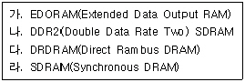
- 가→다→라→나
- 가→라→다→나
- 다→라→나→가
- 다→가→라→나
(정답률: 56%)
4. 다음 중 문서 작성시 내용을 여러 가지 항목으로 구분할 때 넷째 항목의 구분 방법은?
- ㉮, ㉯, ㉰, ....
- 가, 나, 다, ...
- (가), (나), (다), ...
- 가), 나), 다), ...
(정답률: 75%)
5. 다음 중 워드프로세서의 용어에 대한 설명으로 옳지 않은 것은?
- 단어의 간격을 조절하여 일정하게 유지시키는 기능을 영문 균등(Justification)이라고 한다.
- 메뉴를 선택할 때 빠르게 사용할 수 있도록 2개 이상의 키로 정의된 키를 기능 키(Function Key)라고 한다.
- 입력된 내용을 일정한 기준에 따라 재배열하는 기능을 소트(Sort)라고 한다.
- 서로 관련된 파일들을 효율적으로 관리하기 위해 모아둔 장소를 폴더(Folder)라고 한다.
(정답률: 58%)
6. 다음 중 문서 작성에 사용되는 글꼴에 대한 설명으로 옳지 않은 것은?
- 비트맵 글꼴은 매끄럽지 못하고 확대하면 계단현상이 발생한다.
- 윈도에서 사용하는 글꼴들을 대부분의 워드프로세서에서 사용할 수 있다.
- 벡터 방식의 글꼴은 점과 점을 연결하는 곡선과 선분으로 만들어진 것이다.
- 트루타입 글꼴은 글자를 점으로 구성하기 때문에 화면에 보이는 것과 다른 형태로 출력된다.
(정답률: 71%)
7. 다음 중 맞춤법 검사에 대한 설명으로 옳지 않은 것은?
- 문서의 특정부분에 대하여 맞춤법 검사를 할 수 없다.
- 잘못 입력된 단어를 찾아준다.
- 자주 틀리는 단어에 대해서 자동으로 수정할 수 있다.
- 내장된 단어 사전과 비교하면서 맞춤법을 검사한다.
(정답률: 70%)
8. 다음 그림에서 음영 처리된 영역의 명칭으로 알맞은 것은?
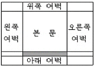
- 제본
- 꼬리말
- 머리말
- 미주
(정답률: 76%)
9. 다음 중 결재에 대한 설명 중 틀린 것은?
- 결재란 당해 기관의 의사를 외부로 표시하는 단계로서, 문서의 효력을 발생하게 하는 절차이다.
- 결재시 결재권자란 용어는 표기하지 아니하고 결재권자의 직위/직급을 쓰고 서명한다.
- 전결은 자기권한에 속하는 업무의 일부를 일정한 자격자에게 위임하여 그 위임을 받은 자가 일정범위의 위임 사항에 관하여 최고 책임자를 대신하여 결재하는 것을 말한다.
- 대결한 문서 중 내용이 중요한 문서에 대하여는 결재권자에게 사후에 보고하여야 한다.
(정답률: 31%)
10. 다음 중 워드프로세서에서 사용되는 키의 설명으로 잘못된 것은?
- [F1]~[F12] 키 : 기능키(Function Key)로써 미리 정의된 일련의 작업을 수행한다.
- [Alt] 키 : Alternative(또는 Alternate)의 약자로써 다른 키와 조합하여 특정 기능을 수행한다.
- [Caps Lock] 키 : 영문의 대/소문자 변환에 사용되며 기본 값은 대문자이다.
- [Delete] 키 : 입력된 문자를 삭제할 때 사용한다.
(정답률: 65%)
11. 다음 중 워드프로세서 용어의 설명으로 옳지 않은 것은?
- 마진(Margin) : 문서의 상하좌우 여백을 말한다.
- 저장(Save) : 작업한 문서를 파일의 형태로 주기억장치에 저장하는 것을 말한다.
- 자동개행(Software Return) : 한 행에 문자가 다 채워졌을 경우 자동으로 커서를 다음 행으로 이동시키는 것을 말한다.
- 머지(Merge) : 두 개의 파일을 하나로 합치는 것을 말한다.
(정답률: 45%)
12. 다음 중 용지의 종류에 대한 설명으로 가장 거리가 먼 것은?
- 낱장 용지는 한국공업규격에 따라 A판과 B판으로 나눈다.
- 연속 용지는 1줄에 출력되는 문자수에 따라 80자와 132자 용지가 있다.
- 낱장 용지는 주로 잉크젯이나 레이저 프린터에 많이 사용한다.
- 번호가 같을 경우에는 A형이 B형보다 큰 용지이다.
(정답률: 76%)
13. 다음 중 KS X 1001 완성형 한글 코드에 대한 설명으로 옳지 않은 것은?
- 완성된 각각의 문자에 코드 값을 기억시켜 한글을 표현한다.
- 국제 규격을 따랐기 때문에 정보 교환시 제어 문자와 충돌이 발생하지 않는다.
- 자음, 모음, 받침만 기억하므로 조합형에 비해 용량을 적게 차지한다.
- 코드 값이 부여된 완성형 글자 외에는 사용할 수 없다.
(정답률: 55%)
14. 다음 중 문서의 분량이 증가되는 교정부호로만 묶여진 것은?
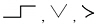
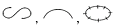
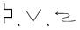
(정답률: 80%)
15. 다음 중 출판문화의 변화에 대해 올바르게 나열한 것은?
- 활자 인쇄→사진 식자→전자통신 출판→전자출판
- 활자 인쇄→사진 식자→전자출판→전자통신 출판
- 사진 식자→활자 인쇄→전자출판→전자통신 출판
- 사진 식자→활자 인쇄→전자통신 출판→전자출판
(정답률: 70%)
16. 다음 문장을 효과적으로 입력시키기 위한 방법이 아닌 것은?
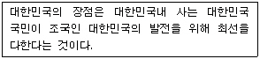
- 복사하기의 사용
- 상용구(Glossary)의 사용
- 매크로(Macro)의 사용
- 보일러 플레이트(Boiler Plate)의 사용
(정답률: 70%)
17. 다음은 전자출판의 어떤 기능을 설명한 것인가?
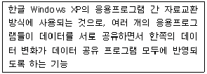
- OLE 기능
- Merge 기능
- Margin 기능
- ODBC 기능
(정답률: 70%)
18. 다음 중 애플사와 마이크로소프트사에서 공동으로 개발하여 Windows에서 기본적으로 사용되는 글꼴로 외곽선 정보를 사용하며, 위지윅(WYSIWYG)을 지원하는 글꼴은 어느 것인가?
- 트루타입 글꼴
- 비트맵 글꼴
- 벡터방식 글꼴
- 외곽선 타입 글꼴
(정답률: 60%)
19. 보고기일 후 몇 일이 경과하여도 보고가 도달되지 아니한 때에 제1차 독촉장을 발부하는가?(사무관리규정 개정으로 제외된 문제입니다.정답은 4번 이었습니다. 여기서는 4번을 정답처리 합니다. 정정자:안선생)
- 1일
- 2일
- 3일
- 5일
(정답률: 85%)
20. 다음과 같이 문장이 수정되었을 때 사용된 교정부호의 순서를 올바르게 나열한 것은?
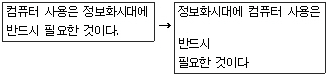
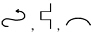
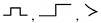
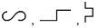
(정답률: 74%)
2과목: PC 운영 체제
21. 한글 Windows XP에서 [사용자 계정]과 관련하여 [제한된 계정]을 가진 사용자가 수행할 수 있는 작업은?
- 공유 문서 폴더의 파일을 볼 수 있다.
- 새로운 계정을 만들고 변경, 삭제할 수 있다.
- 시스템 전체 단위로 설정을 변경하도록 설정할 수 있다.
- 다른 사용자의 암호를 변경할 수 있다.
(정답률: 57%)
22. 다음 중 한글 Windows XP에서 [네트워크 연결] 창의 [보기]-[자세히] 메뉴를 선택하여 표시할 수 있는 네트워크 연결의 세부 항목이 아닌 것은?
- 네트워크의 장치 이름
- 네트워크의 종류
- 네트워크의 상태
- 네트워크 사용자 계정의 암호
(정답률: 74%)
23. 한글 Windows XP에서 [시스템 도구]에 있는 [시스템 정보]에 관한 설명으로 옳지 않은 것은?
- 시스템 구성 정보를 수집하여 연관된 시스템 항목을 표시할 수 있는 메뉴를 제공한다.
- 하드웨어 리소스에는 DMA, IRQ, I/O 주소 및 메모리 주소를 보여준다.
- 구성요소는 시스템 구성요소에 관련된 정보를 표시한다.
- 소프트웨어 환경은 컴퓨터에 설치된 모든 소프트웨어의 스냅샷(Snapshot)을 표시한다.
(정답률: 65%)
24. 한글 Windows XP의 바탕화면에 있는 바로 가기 아이콘의 등록 정보 창에 대한 설명으로 옳은 것은?
- 바로 가기 아이콘의 등록정보 창에서는 [읽기 전용] 특성을 설정할 수 없다.
- 바로 가기 아이콘의 등록정보 창에서는 공유를 설정할 수 없다.
- 바로 가기 아이콘의 등록정보 창에는 파일의 위치가 표시되지 않는다.
- 바로 가기 아이콘의 등록정보 창에는 디스크 할당 크기가 표시되지 않는다.
(정답률: 48%)
25. 다음 중 한글 Windows XP에서 [휴지통]에 관한 설명으로 옳지 않은 것은?
- [휴지통]에 들어있는 파일을 선택하여 밖으로 드래그하면 복원된다.
- [휴지통]에 들어있는 파일은 복원하기 전에는 그 내용을 볼 수가 없다.
- [휴지통]에 들어있는 파일은 이름을 변경할 수 있다.
- 3.5인치 플로피 디스크에서 삭제된 파일은 [휴지통]으로 들어가지 않는다.
(정답률: 69%)
26. 한글 Windows XP의 문서 편집기인 [메모장]에 관한 설명으로 옳지 않은 것은?
- 간단한 메모나 텍스트 파일을 작성하거나 편집할 때 사용된다.
- 다른 문서의 개체 삽입(OLE) 기능이 가능하다.
- 메모장에서 작성된 파일은 따로 정하지 않으면 확장자는 ‘.TXT’가 된다.
- 작성하는 전체 문서의 글꼴이나 글자의 크기를 변경할 수 있다.
(정답률: 72%)
27. 다음 중 한글 Windows XP에서 파일 및 폴더 관리에 관한 설명으로 옳지 않은 것은?
- 폴더 내에서 파일이나 하위 폴더의 이름을 바꿀 때는 항목을 선택한 후에 [파일] 메뉴의 [이름 바꾸기] 항목을 선택한다.
- 파일이나 폴더가 복사 또는 이동할 때 잠시 기억되는 임시 기억 장소를 클립보드라고 한다.
- 마우스로 드래그하여 복사할 때에는 마우스 포인터의 오른쪽 아래에 [+] 표시가 나타난다.
- 파일과 폴더는 계층적 구조로서 파일은 폴더들을 포함할 수 있다.
(정답률: 50%)
28. 한글 Windows XP의 기능 중에서 선점형 멀티태스킹에 대한 설명으로 옳은 것은?
- 응용 프로그램의 오류가 발생했을 경우 오류가 발생한 응용 프로그램만 강제 종료할 수 있다.
- 하나의 컴퓨터 프로그램이 2개 이상의 컴퓨터에서 동작 가능한 기능이다.
- 복수 개의 응용 프로그램이 함께 실행되며 각 응용 프로그램은 스스로 자원을 반납한다.
- MS-DOS를 비롯한 다른 운영체제에서도 사용되는 방식이다.
(정답률: 39%)
29. 다음 중 한글 Windows XP의 [시스템 등록 정보] 창에 있는 [하드웨어] 탭에서 수행할 수 없는 작업은?
- [장치 관리자]를 이용하여 각 장치의 속성을 변경할 수 있다.
- [하드웨어 추가 마법사]를 이용하여 새로운 장치를 연결할 경우에 드라이버 검색을 위하여 Windows Update에 연결하는 방법을 설정할 수 있다.
- [드라이버 서명]을 이용하여 특정 사용자만을 위한 장치 사용을 허용할 수 있다.
- [하드웨어 프로필]을 이용하여 다른 하드웨어 구성에 대한 하드웨어 프로필을 구성할 수 있다.
(정답률: 42%)
30. 한글 Windows XP의 [디스크 검사]에 관한 설명으로 옳지 않은 것은?
- [디스크 검사]는 디스크의 물리적이거나 논리적인 오류뿐만 아니라 바이러스 검사도 포함한다.
- [디스크 검사]를 실행하려면 현재 볼륨의 모든 파일을 닫고 하는 것이 좋다.
- 해당 디스크 드라이브의 등록정보 창의 [도구] 탭에서 [지금 검사]를 선택하여 실행된다.
- [명령 프롬프트] 창에서 디스크 검사에 대한 상태 보고서를 만들고 표시하려면 ‘chkdsk.exe’를 실행하면 된다.
(정답률: 51%)
31. 한글 Windows XP에서 텍스트 파일(*.txt)을 더블 클릭할 때 이미 설치되어 있는 특정 에디터 프로그램이 실행되도록 설정하는 방법으로 가장 적절한 것은?
- [제어판]의 [프로그램 추가/제거]에서 설정
- [제어판]의 [시스템]에서 설정
- [내 컴퓨터] 창에서 [도구] 메뉴의 [폴더 옵션]에서 설정
- 바탕 화면의 등록정보 창에서 설정 있다.
(정답률: 48%)
32. 한글 Windows XP에서 [제어판]에 있는 [내게 필요한 옵션]을 이용하여 할 수 없는 작업은?
- 신체에 장애가 있는 사용자가 편리하게 마우스, 키보드, 프린터를 사용할 수 있도록 설정할 수 있다.
- 커서가 깜박이는 속도 및 커서 너비를 변경할 수 있다.
- [토글키] 설정으로 [Caps Lock], [Num Lock], [Scroll Lock] 키 들이 눌릴 때 알림음을 듣게 할 수 있다.
- 프로그램에서 나오는 음성 또는 소리를 화면에 자막으로 표시하도록 설정할 수 있다.
(정답률: 30%)
33. 한글 Windows XP의 바탕화면에 관한 설명으로 옳지 않은 것은?
- 바탕화면의 하단 부분의 [작업 표시줄]은 크기와 위치의 변경이 가능하다.
- 바탕화면의 배경 그림을 바꾸려면 [디스플레이 등록 정보] 창에서 설정할 수 있다.
- 바탕화면에서 바로 가기 아이콘을 삭제하면 실제 프로그램도 같이 삭제된다.
- [탐색] 창에서 바탕화면에 바로 가기 아이콘을 만들려면 해당 파일의 바로 가기 메뉴에서 [보내기]의 [바탕 화면에 바로 가기 만들기]를 클릭하면 된다.
(정답률: 74%)
34. 한글 Windows XP의 [보조프로그램]에 있는 [엔터테인먼트]에 관한 설명으로 옳지 않은 것은?
- [녹음기]를 이용하면 소리 파일(*.wav)을 재생 및 편집할 수 있다.
- [Windows Media Player]를 사용하면 소리를 녹음하여 파일로 저장할 수 있다.
- [볼륨 조절]을 이용하면 음소거를 할 수 있다.
- [볼륨 조절]을 이용하면 소리의 밸런스를 변경할 수 있다.
(정답률: 56%)
35. 다음 중 한글 Windows XP에서 네트워크 설정에 관한 설명으로 옳은 것은?
- 다양한 네트워크 프로토콜 중에서 하나만 설치해야 한다.
- 인터넷에 접속하기 위해서는 TCP/IP 프로토콜을 설치해야 한다.
- IPX/SPX 프로토콜이 설치되어야만 파일 및 프린터 공유를 할 수 있다.
- 한 번 입력한 컴퓨터 이름과 작업 그룹은 변경할 수 없다.
(정답률: 61%)
36. 한글 Windows XP에서 파일이나 폴더의 복사, 이동에 관한 설명으로 옳지 않은 것은?
- 동일한 드라이브에서 다른 폴더로 이동할 경우에는 해당 파일이나 폴더를 선택하고 목적하는 위치로 드래그 앤 드롭하면 된다.
- 동일한 드라이브에서 다른 폴더로 복사할 경우에는 파일이나 폴더를 선택하고 [Ctrl] 키를 누른 상태로 목적하는 위치로 드래그 앤 드롭하면 된다.
- 다른 드라이브로 복사할 경우에는 파일이나 폴더를 선택하고 목적하는 위치로 드래그 앤 드롭하면 된다.
- 다른 드라이브로 이동할 경우에는 파일이나 폴더를 선택하고 [Ctrl] 키를 누른 상태로 목적하는 위치로 드래그 앤 드롭하면 된다.
(정답률: 48%)
37. 한글 Windows XP의 네트워크 환경에서 게이트웨이(Gateway)가 하는 기능으로 옳지 않은 것은?
- 서로 다른 네트워크를 연결하는 장치이다.
- 서로 다른 메시지의 형식 변환 기능을 제공한다.
- 서로 다른 주소 구조를 변환한다.
- 네트워크의 데이터 전송 신호를 증폭하여 연결된 네트워크로 전송하는 역할을 한다.
(정답률: 49%)
38. 다음 중 한글 Windows XP에서 프린터의 설치에 관한 설명으로 옳지 않은 것은?
- 다른 컴퓨터에 연결된 프린터를 네트워크로 연결하여 사용할 경우에는 다른 컴퓨터의 프린터가 공유되어 있어야 한다.
- 새로운 프린터를 추가 설치할 경우에는 ‘프린터 추가 마법사’를 이용할 수 있다.
- 여러 대의 프린터를 기본 프린터로 지정할 수 있다.
- 프린터를 설치할 경우에는 프린터 제조업체와 기종을 지정해주거나 [디스크 있음]을 선택하여 해당 프린터의 드라이버를 설치한다.
(정답률: 70%)
39. 한글 Windows XP의 [Windows 탐색기]에서 명령어 처리기인 COMMAND.COM 파일이 COMMAND라고만 표시되어 있다.파일의 확장자가 보이게 표시하려면 어떻게 해야 하는가?
- 주 메뉴 [도구]의 [폴더 옵션]-[보기] 탭에서 ‘알려진 파일 형식의 파일 확장명 숨기기’에 관한 옵션을 해제한다.
- 주 메뉴 [보기]의 [폴더 옵션]-[파일 형식] 탭에서 ‘알려진 파일형식 등록하기’를 선택한다.
- 해당 폴더의 등록정보 창에서 파일 확장명 보이기를 체크한다.
- COMMAND 파일을 찾아서 파일명을 COMMAND.COM으로 바꾼다.
(정답률: 52%)
40. 다음 중 한글 Windows XP에서 할 수 있는 작업이 아닌 것은?
- Windows Update를 사용하여 Windows를 최신 정보로 유지할 수 있다.
- 시스템 복원을 이용하여 이전에 삭제한 모든 파일을 복원할 수 있다.
- Windows XP와 호환되는 하드웨어 및 소프트웨어를 찾을 수 있다.
- 시스템 도구를 사용하여 컴퓨터 정보를 확인할 수 있으며 문제를 진단할 수 있다.
(정답률: 59%)
3과목: 컴퓨터 및 정보활용
41. 실제 장면을 촬영한 후, 화면에서 등장하는 캐릭터나 물체의 윤곽선을 추적하여 애니메이션의 기본형을 만들고, 여기에 수작업으로 컬러를 입히거나 형태를 변형시켜 사용하는 애니메이션 기법을 무엇이라고 하는가?
- 모핑(Morphing)
- 포깅(Fogging)
- 로토스코핑(Rotoscopind)
- 클레이메이션(Claymation)
(정답률: 46%)
42. 유닉스(UNIX)의 특징으로 거리가 먼 것은?
- UNIX는 다중 작업용 시스템이다.
- UNIX는 멀티 유저 시스템이다.
- UNIX는 링크형 파일 시스템이다.
- UNIX는 가상 메모리 운영체제이다.
(정답률: 45%)
43. 컴퓨터 시스템에서 운영체제의 목적은 유한한 리소스의 효율적인 관리이다. 다음 중 운영체제가 관리하는 리소스의 종류와 거리가 먼 것은?
- Main Memory
- Processor
- BIOS
- Hard Disk
(정답률: 56%)
44. 다음 중에서 중앙처리장치에 관한 설명으로 옳지 않은 것은?
- 여러 CPU를 갖는 컴퓨터는 단일 CPU를 갖는 컴퓨터보다 느리다.
- 레지스터는 중앙처리장치 내에 위치하는 고속의 기억 장소이다.
- 중앙처리장치의 클럭 주파수가 높으면 처리속도가 빠르다.
- 소수점이 있는 산술연산이 많은 경우 속도 증가를 위해 보조처리기가 필요하다.
(정답률: 53%)
45. 다음 중 속도가 가장 빠른 디지털 통신망은?
- ADSL
- ISDN
- E1
- ATM
(정답률: 39%)
46. 다음 보기의 ( ) 안에 들어갈 내용이 순서대로 올바르게 짝지어진 것은?
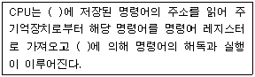
- MBR, 연산장치
- 프로그램 카운터, 제어장치
- 제어장치, 연산장치
- 연산장치, MBR
(정답률: 45%)
47. 다음 중 보안 관련 용어에 대한 설명으로 옳지 않은 것은?
- 트로이 목마(Trojan Horse)란 외부(인터넷)로부터의 침입을 막기 위하여 격리시키는 프로그램이다.
- 웜(Worm)이란 네트워크를 통해 연속적으로 자신을 복제하여 시스템의 부하를 높이는 바이러스의 일종이다.
- 디지털 서명이란 송신자의 신분을 보증하는 암호화된 데이터로서, 메시지에 덧붙여 보내기도 한다.
- 해킹이란 컴퓨터 시스템에 불법적으로 접근, 침투하여 시스템과 데이터를 파괴하는 행위이다.
(정답률: 67%)
48. 다음 중 네트워크를 통해 전송되는 데이터에 대한 위험 요소를 막기 위하여 제공되어야 할 보안 서비스가 아닌 것은?
- 기밀성
- 무결성
- 원격접속
- 인증
(정답률: 64%)
49. 다음 중 ROM으로부터 읽어 온 BIOS 루틴을 좀 더 빠르게 액세스하기 위하여 RAM의 특수한 영역에 넣어 놓은 일종의 복사본을 의미하는 것은?
- ROM BIOS
- CMOS
- Virtual Memory
- shadow RAM
(정답률: 40%)
50. 다음 중 데이터 전송기술에 대한 설명으로 옳지 않은 것은?
- 데이터 전송속도의 단위는 MIPS를 쓴다.
- 디지털 데이터의 감쇠현상을 방지하기 위해서 리피터를 사용한다.
- 아날로그 데이터의 감쇠현상을 복원하기 위해서 증폭기를 사용한다.
- 모뎀은 디지털 데이터와 아날로그 데이터를 상호 변환하는 기능을 가진다.
(정답률: 42%)
51. 다음 중 웹 문서 관련 표준과 거리가 먼 것은?
- SGML
- XML
- APL
- HTML
(정답률: 56%)
52. 다음 중 각각의 통신망 구조(Topology)에 대한 장점을 설명한 것으로 옳지 않은 것은?
- 스타(STAR)형 - 고장 발견이 쉽고 유지보수 및 확장이 용이하다.
- 링(RING)형 - 노드 하나에 문제가 발생하더라도 전체 네트워크에 영향을 주지 않는다.
- 버스(BUS)형 - 설치가 용이하고 케이블링에 드는 비용을 최소화할 수 있어 경제적이다.
- 망(MESH)형 - 응답시간이 빠르다.
(정답률: 59%)
53. 다음 중 인터넷네트워킹에 관련된 통신 프로토콜이 아닌 것은?
- TCP
- UDP
- ICMP
- OCP
(정답률: 44%)
54. 다음 중 프로그램 내장방식의 컴퓨터와 거리가 먼 것은?
- ENIAC
- EDSAC
- UNIVAC-I
- EDVAC
(정답률: 52%)
55. 다음 중 그래픽 파일 형식에 대한 설명으로 옳지 않은 것은?
- GIF 형식은 Animation을 표현할 수 있다.
- JPG 형식은 GIF 형식보다 다양한 색상을 나타낼 수 있다.
- JPG 형식은 인터넷 상에서 그림을 전송할 때 많이 사용된다.
- GIF 형식은 24bit 트루 컬러(True Color)로 표현할 수 있다.
(정답률: 48%)
56. 다음 중 PC 고장에 따른 응급처치로 적절하지 않은 것은?
- “Non-System disk or disk error” 메시지가 나타날 경우→부팅 파일이 없는 디스켓이 A 드라이버에 있는 경우 디스크를 뺀 후 다시 부팅
- 전원이 들어오지 않을 경우→전원 케이블을 확인하고 불량인 경우 교체
- “Driver failure invalid...” 메시지가 나타날 경우→디스크 시스템 파일 손상 확인 후 복구
- BIOS 업데이트한 후 부팅이 되지 않는 경우→VGA 카드 손상 여부 확인 후 수리
(정답률: 47%)
57. 컴퓨터는 처리방식에 의한 분류로 아날로그, 디지털, 하이브리드 컴퓨터로 나타낼 수 있다. 아날로그 컴퓨터의 주요 구성 회로는?
- 논리회로
- 증폭회로
- 연산회로
- 플립플롭 회로
(정답률: 49%)
58. 다음 중 컴퓨터 하드디스크에 대한 설명으로 옳지 않은 것은?
- 트랙은 하드디스크 표면의 동심원을 말한다.
- 섹터는 트랙의 일부분으로 데이터가 저장되는 기본 단위이다.
- 클러스터는 하드디스크의 중심축으로부터 같은 거리에 있는 트랙들의 집합을 말한다.
- 헤드는 데이터를 읽어 내거나 쓰는 장치를 말한다.
(정답률: 51%)
59. 다음 중 RAID(Redundant Array of Inexpensive Disks)에 대한 설명으로 옳지 않은 것은?
- 하드디스크, CD-ROM, 스캐너 등을 연결해 주는 기술
- 단순히 하드디스크의 모음뿐만 아니라 자동으로 복제해 백업 정책을 구현해 주는 기술
- 서버(Server)에서 대용량의 하드디스크를 이용하는 경우 필요로 하는 기술
- 여러 개의 하드디스크를 모아서 하나의 하드디스크처럼 보이게 하는 기술
(정답률: 32%)
60. 다음 중 JAVA의 특징과 거리가 먼 것은?
- 보안에 강하며 이식성이 높다.
- 객체 지향적이다.
- 플랫폼에 종속적이다.
- 분산 환경에 적합하다.
(정답률: 50%)
ROM은 읽기 전용 메모리로, 저장된 내용을 읽을 수는 있지만 수정하거나 새로운 내용을 저장할 수는 없다. 이는 ROM이 제조 과정에서 내용이 결정되기 때문이다. 따라서 ROM은 수정이 불가능하고, 새로운 내용을 저장할 수 없다.